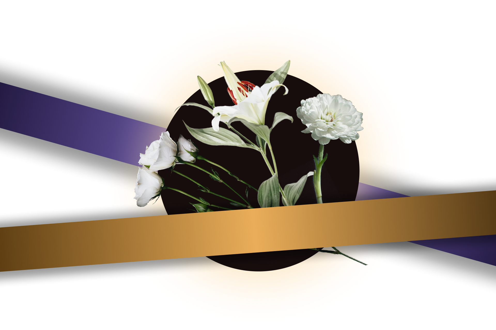
白(Bái)
Explication du contexte
Projet personnel en septembre 2025, ce travail est né d’un deuil vécu en Asie lors de mon premier enterrement, révélant le contraste entre les perceptions du deuil en Europe et en Asie, au croisement de mes cultures française et chinoise.
Le projet se compose d’une photographie grand format, exprimant l’intensité immédiate du deuil, et d’une série de photographies traduisant son évolution dans le temps, soulignant l’idée que le deuil ne disparaît pas mais se transforme.
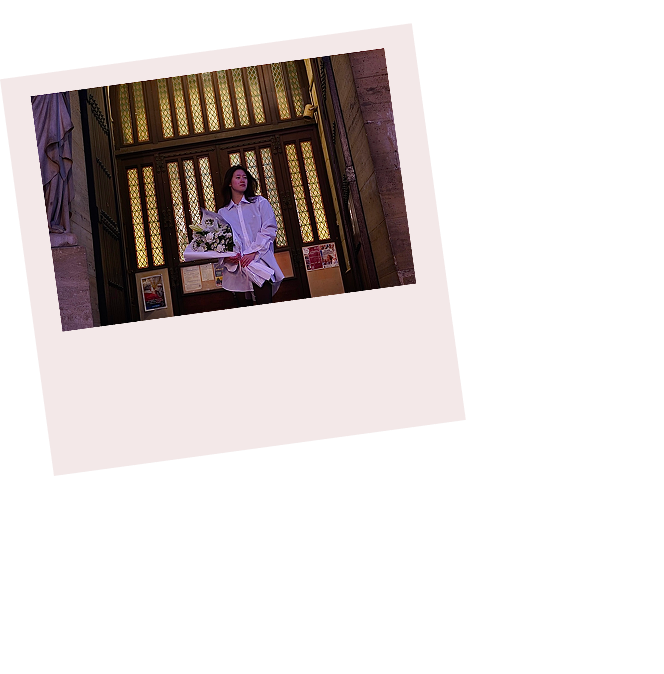
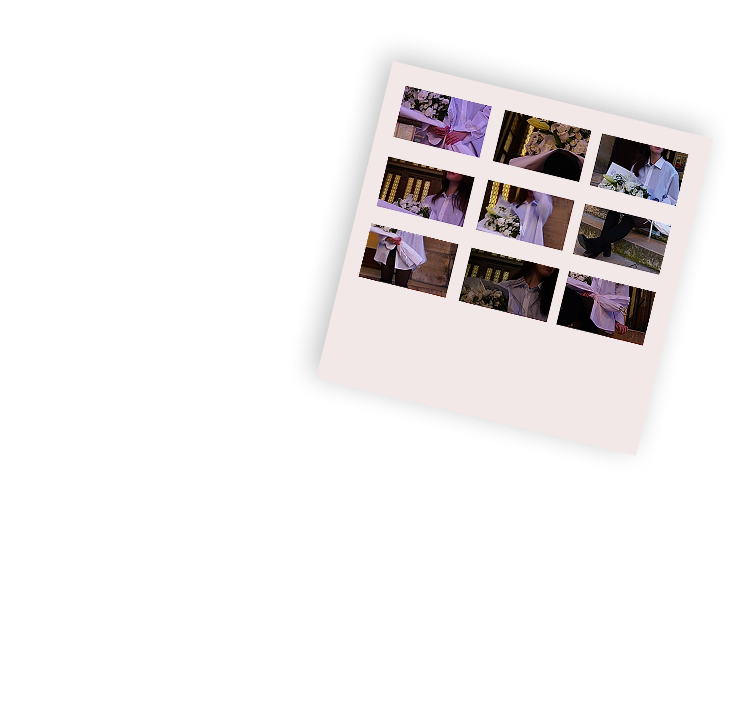
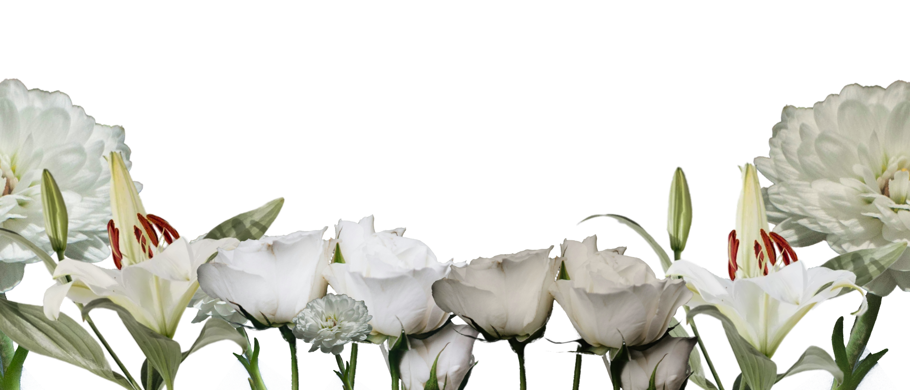
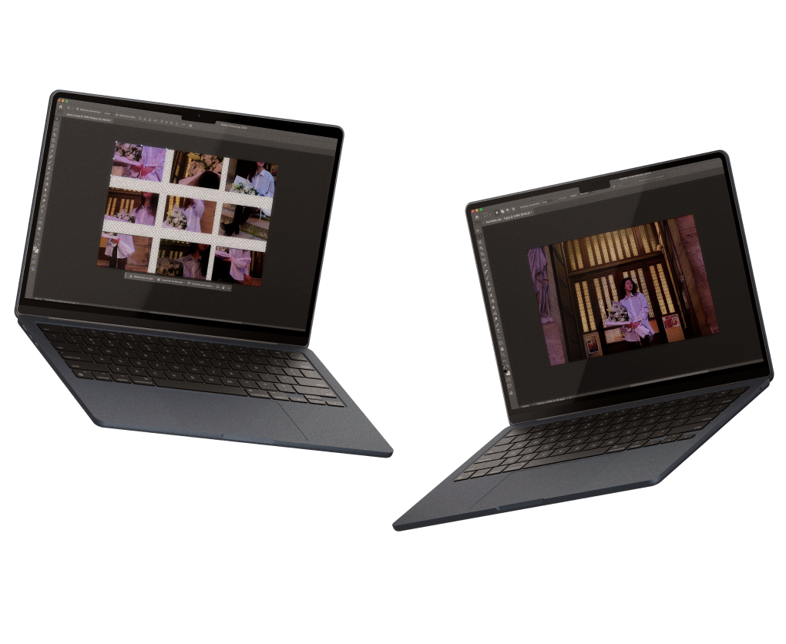
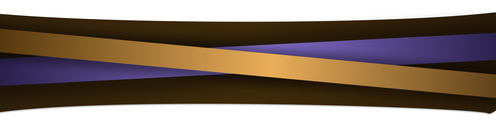
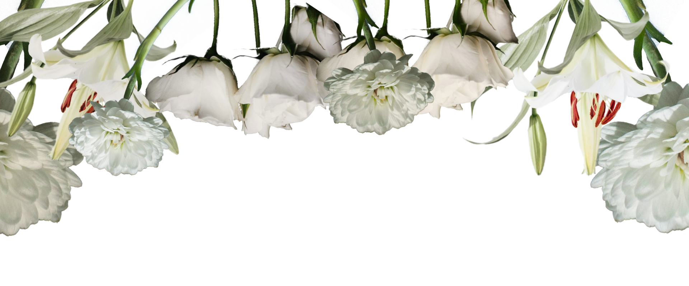
Couleur
LAVANDE AMÉTHYSTE
HEX: #8979C1
RGB: 137 121 193
CMYK: 29% 37% 0% 24%
CAMEL DORÉ
HEX: #C29A62
RGB: 194 154 98
CMYK: 0% 21% 49% 24%
BRUN CACAO
HEX: #5D302D
RGB: 80 48 45
CMYK: 0% 40% 44% 69%
BRUN ESPRESSO
HEX: #210E0D
RGB: 33 14 13
CMYK: 0% 58% 61% 87%
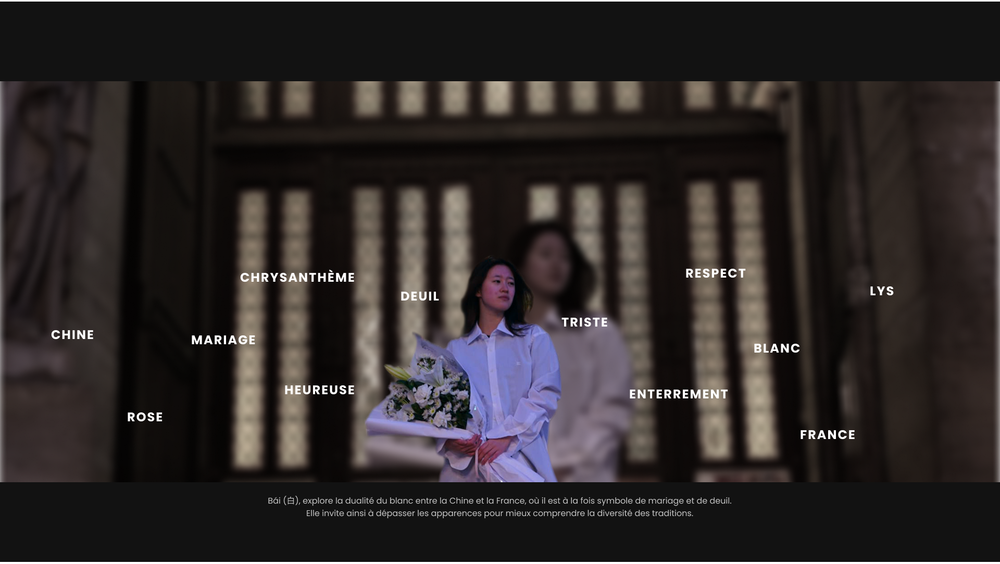
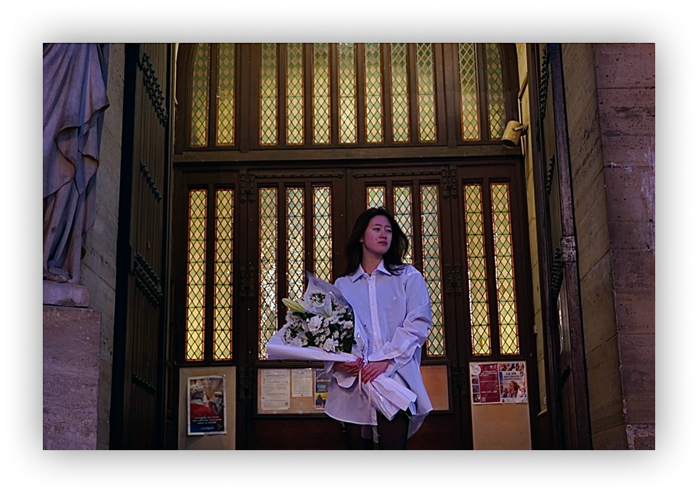
La première partie fonctionne de manière indépendante. Elle joue avec les symboles du mariage et du deuil. Fleurs de lys, roses et chrysanthèmes, qui évoquent ensemble un amour pur, un hommage respectueux et une paix profonde, dans un message volontairement ambigu, renforcé par le cadre d’une église et l’expression du visage.
La second partie, fonctionne avec la partie 1. Ces photographies explorent les différentes étapes du deuil.
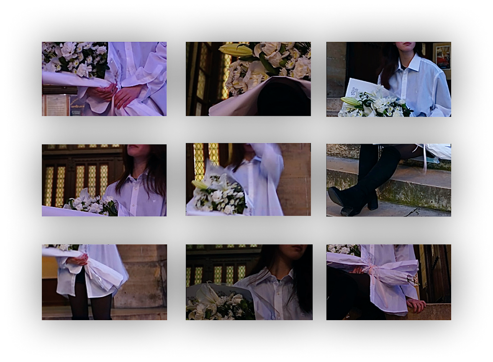
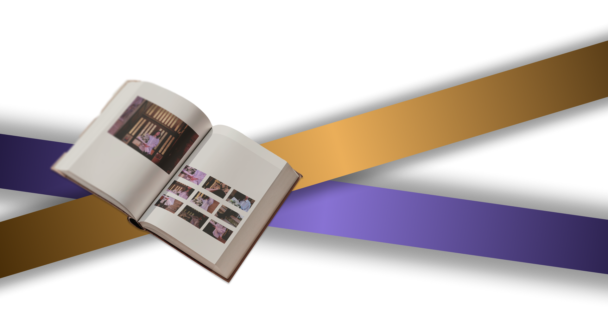